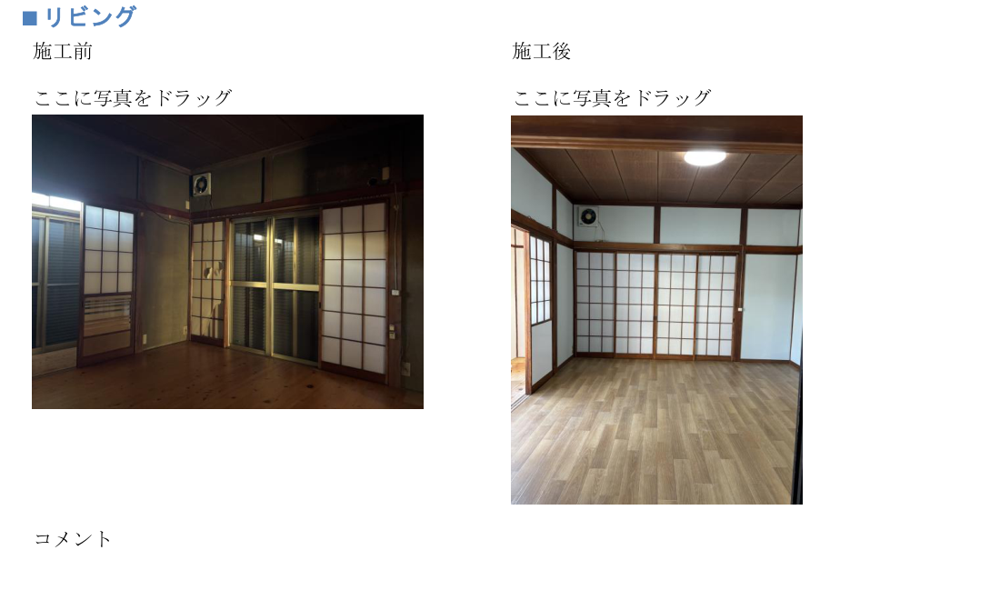
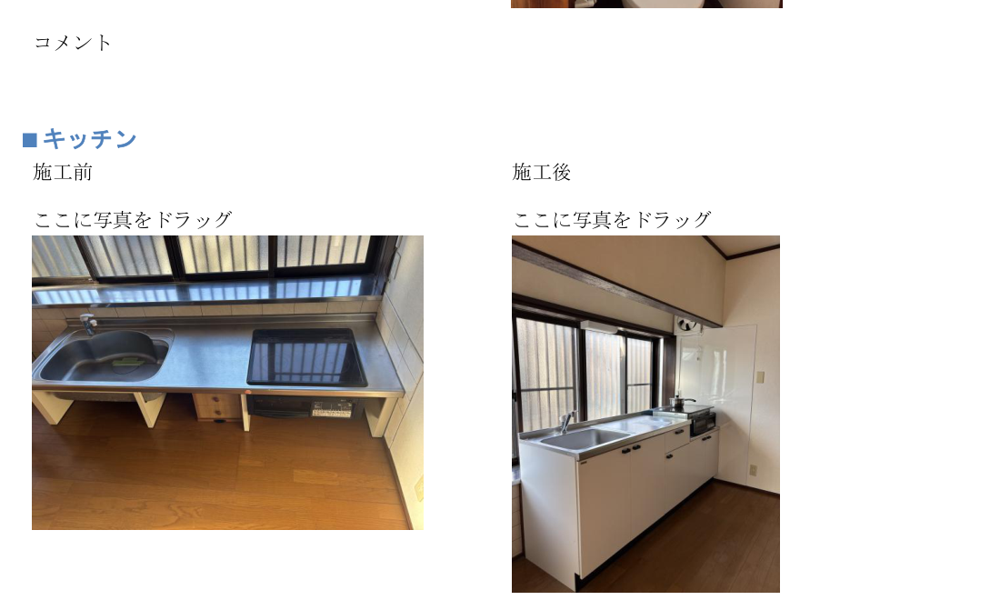
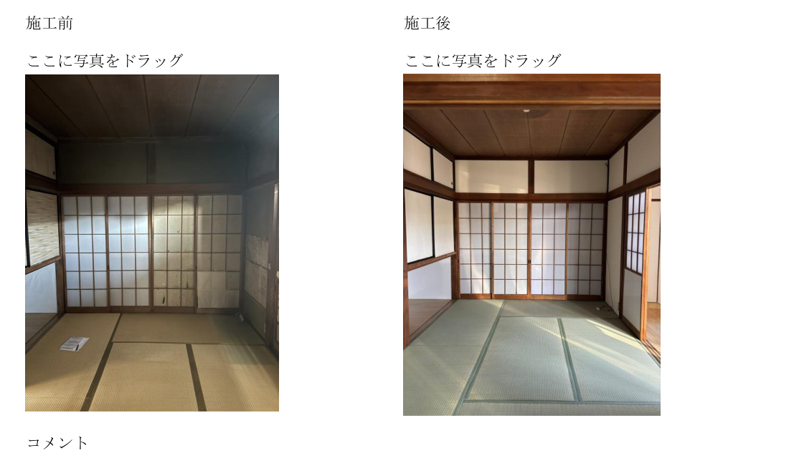
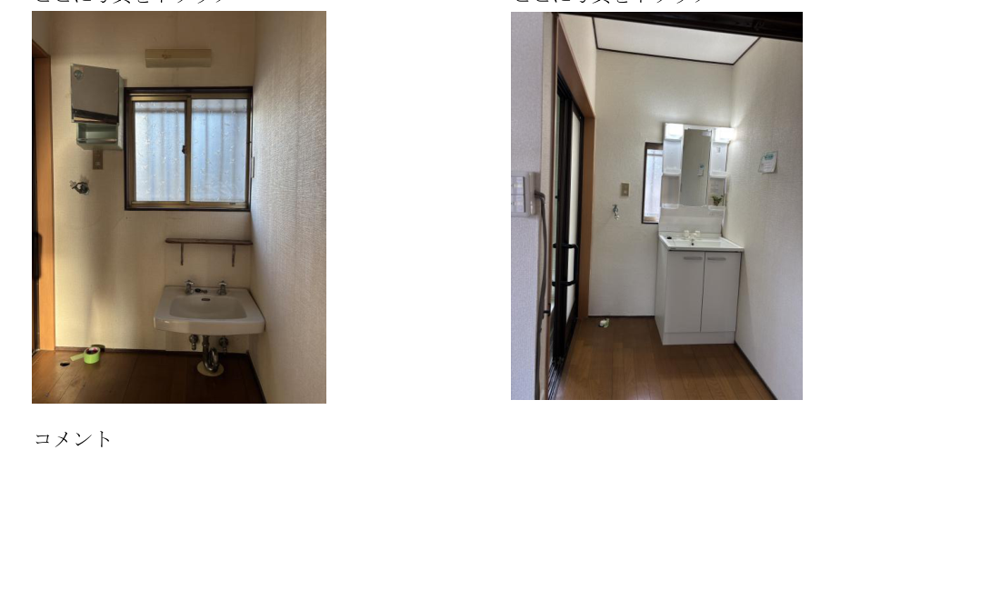
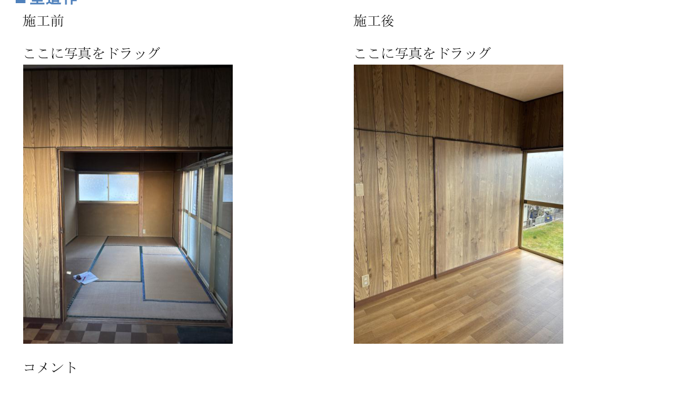
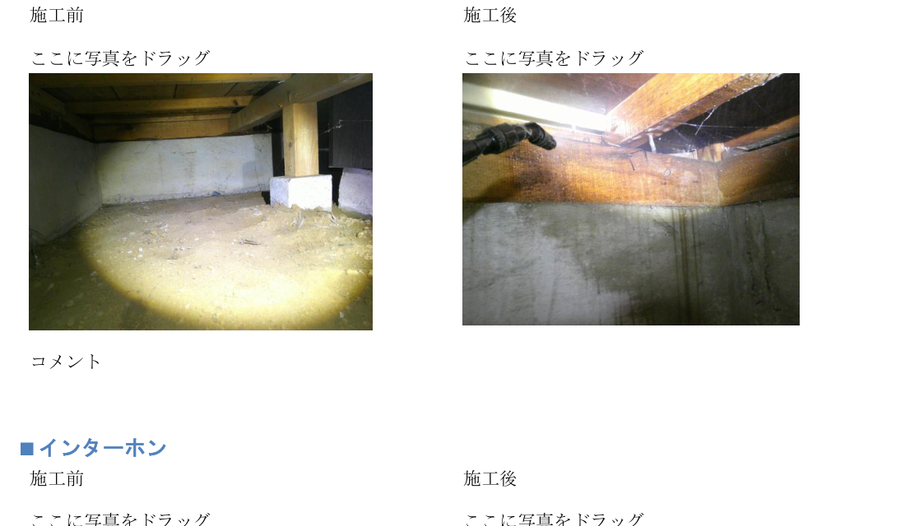

古い家をそのまま使うのが不安
見える部分だけでなく、湿気や床下の状態も含めて確認したい方に向いています。
株式会社カンワースのリノベーションは、内装の見た目をきれいにするだけではありません。 居室・水回り・細部の改修に加え、床下や湿気、カビの原因になりやすい部分まで確認し、 これから先も使いやすい住まいへ整えていきます。

暗さ・古さ・使いにくさを残したままにせず、暮らしやすい状態へ整える施工を目指します。
中古住宅の再生、賃貸退去後の立て直し、空き家の活用前整備など、 「どこから直すべきかわからない」という段階からご相談いただけます。
見える部分だけでなく、湿気や床下の状態も含めて確認したい方に向いています。
和室・リビング・水回り・建具など、生活導線を含めてまとめて整えたいケースに対応します。
ただ戻すだけではなく、次の入居や活用を見据えた整備をご希望の方にも適しています。
「おしゃれにする」だけではなく、「この先も使いやすいか」を重視して計画します。
一部屋だけきれいでも、生活導線やほかの場所との落差が大きいと満足度は下がります。全体バランスを見ながら整えます。
古い家特有の暗さ、使いにくさ、手入れのしづらさを減らし、日常で使いやすい状態を目指します。
内装工事だけでなく、湿気や床下環境が関係するケースも踏まえてご相談いただけます。
牛久市南の現場写真をもとに、空間の変化が伝わりやすい箇所を掲載しています。

古さが目立つ状態から、明るくすっきりした印象へ。日常で最も使用頻度の高い場所の変化は、住みやすさに直結します。

既存の雰囲気を活かしながら、清潔感と整った印象を出すことで、来客時にも見せやすい空間に変わります。

狭く古さを感じやすい洗面まわりも、設備更新と内装の整理で、毎日使いやすい空間へ整います。
部屋全体の印象が大きく変わる代表例です。暗さや古い印象を抑え、家の中心として使いやすい空間に整えます。

部屋の印象を左右する壁面や造作の整備にも対応。仕上がりの完成度を高める細かな施工も大切にしています。

床下の状態は、湿気・劣化・カビの再発リスクを考えるうえで見逃せません。見える場所だけで終わらせない考え方も強みです。
初めての方でも進めやすいよう、現地確認からご提案まで整理して対応します。
お困りごと、物件状況、ご希望の方向性を伺います。
内装・水回り・導線・必要に応じて床下などを確認します。
状態に応じて、工事内容や進め方を整理してご案内します。
工程を踏みながら、見た目と使いやすさの両面を整えます。
仕上がりを確認し、次に使いやすい状態まで整えます。
可能です。まずは現状のお悩みや使い方を伺い、必要な方向性を整理していきます。
はい。水回り、居室、細部の整備など、規模に応じてご相談いただけます。
必要に応じて確認し、見える部分だけでは判断しにくい不安も含めてご相談いただけます。
可能です。再活用や次の入居を見据えた整備としてご相談ください。